今年全球影業的慘澹無須多提，在之前迎來《天能》、《神力女超人 1984》等動作鉅片，皮克斯動畫工作室則搬出年末溫馨之作《靈魂急轉彎 Soul》，可稱得上為 2020 畫上完美句點的療癒佳選。 皮克斯擅於透過動畫，再現我們已逐漸無感的日常片刻，賦予寓意並促使觀眾反思。而本次，《靈魂急轉彎 Soul》則專注探討一個獨具哲思的問題：
「生而為人，我們為何而活？」
故事劇情
故事講述一名中學樂隊教師 Joe Gardner（Jamie Foxx 配音）渴望擺脫穩定的工作，成為一名優秀的爵士歌手，他遠大的志向使自己的母親 Libba（Phylicia Rashad 配音）感到相當苦惱。
「我的腦海裡只有音樂，從早上一睜開眼到晚上閤眼，我命中注定要演奏。這是我生命的意義。」— Joe Gardner
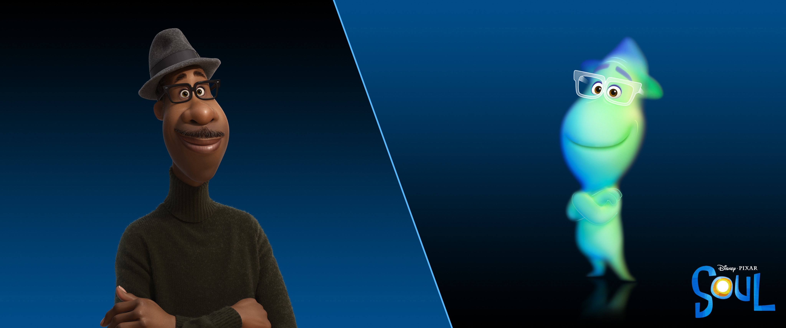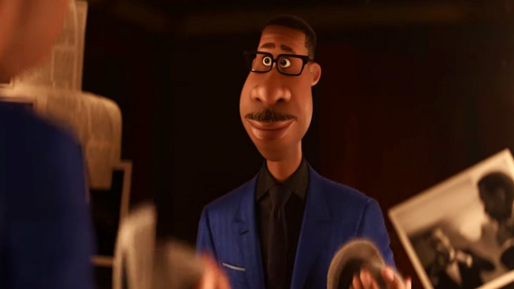
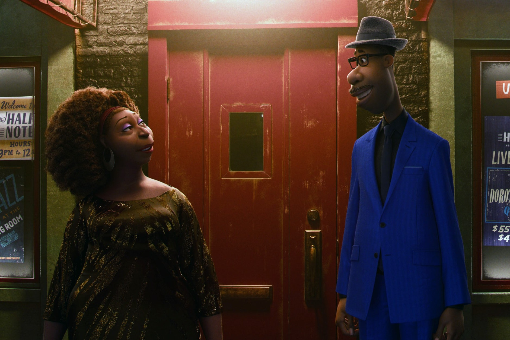
而在 Joe 確定中選爵士俱樂部的成員後，長久以來渴望的出名機會近若咫尺，走在路上卻意外失足，摔下水道而陷入昏迷，靈魂出竅來到人死後的世界，醒來便發現自己正跟隨其他靈魂前往來世（The Great Beyond），Joe 認為自己命不該絕，便又意外墜入另一個世界——投胎先修班（The Great Before）。
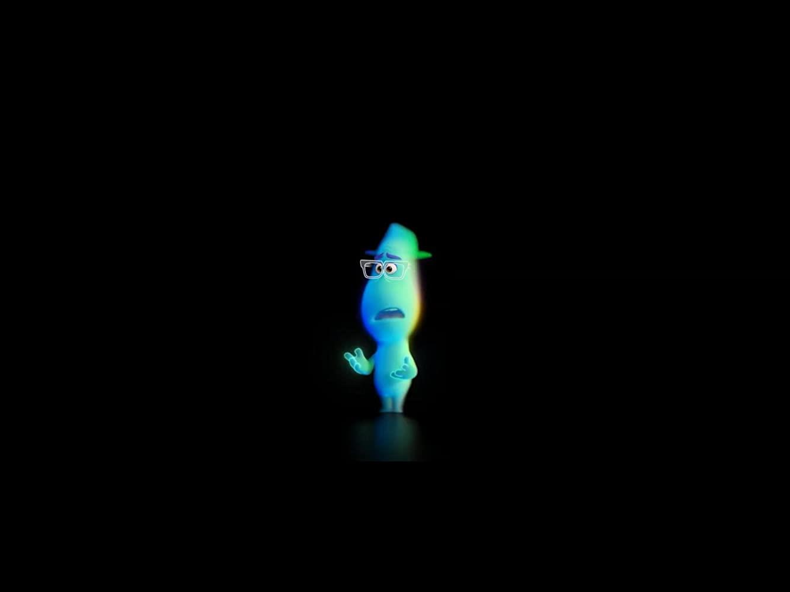
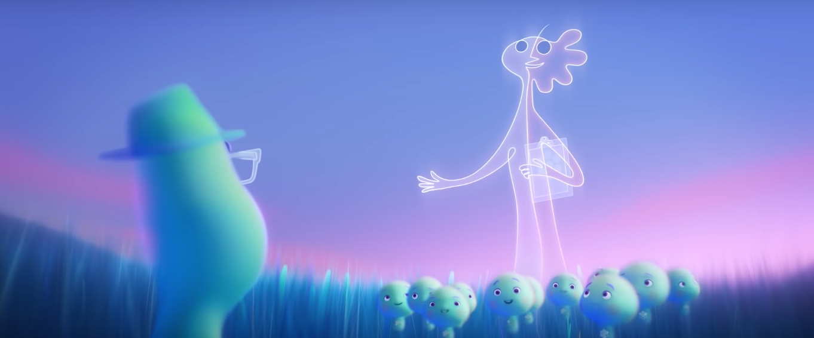
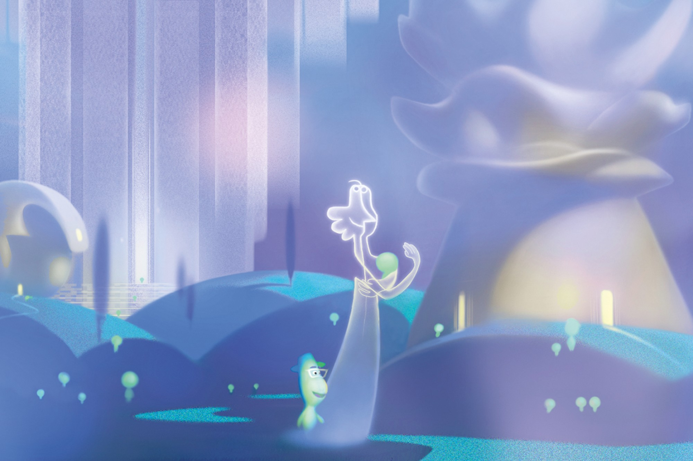
在這，靈魂能夠找到自己的個性、怪癖與興趣，在具備所有成為「人」的條件後，靈魂才能夠進入人世。 此時，Joe 遇見留級幾百年的靈魂 22 號（Tina Fey 配音）。她厭世、找不到生命的意義，自稱已看透人世間的一切，對轉世投胎毫無興趣。在故事發展的插曲中。Joe 發現自己的肉體仍在醫院陷入昏迷，便聯手 22 號開啟一場重返人世大冒險。
「放心，靈魂在投胎先修班無法被摧毀，那是人世間的工作。」— 靈魂 22 號
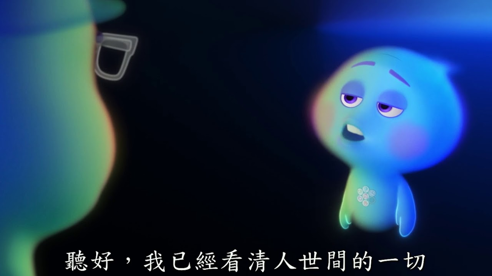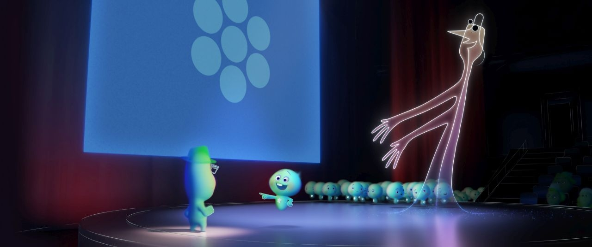
本片靈感始於導演的中年危機
導演兼編劇 Pete Docter 過去亦曾操刀《腦筋急轉彎》、《天外奇蹟》、《怪獸電力公司》等熱門動畫電影。據《紐時》資訊，四年前，當 Pete 藉由《腦筋急轉彎》拿下自己生涯中第二座奧斯卡時，製片 Dana Murray 回憶道：「Pete 當時有種感覺，他正經歷一段『難道就這樣嗎？我之後只要繼續這樣做就好了？我不知道這算不算中年危機』的時刻。」
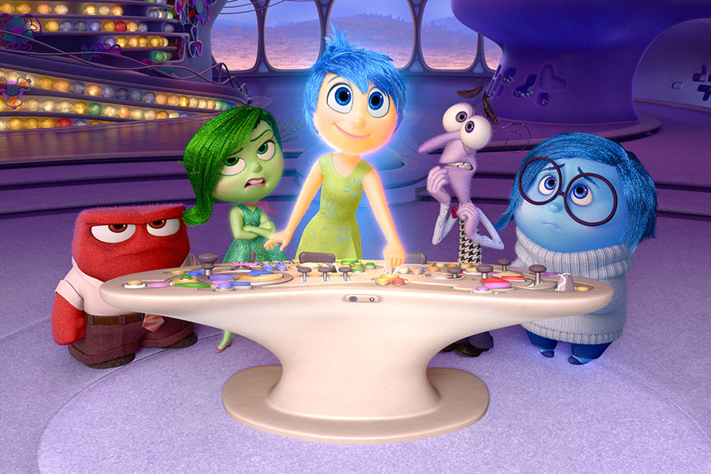 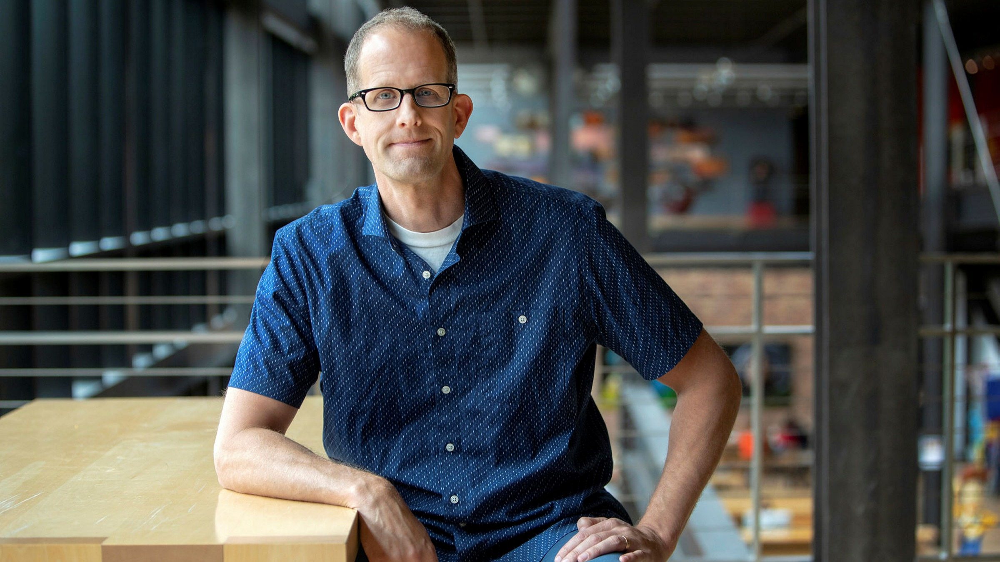
於是，Pete 便開始思考人類的性格起源，以及是否人生來註定要做某些事（俗稱「天命」）。Pete 隨後花了約兩年時間培養 Joe 的角色原型，定調為「紐約皇后區的黑人中學音樂教師與爵士音樂家」，而這樣還是不夠，「我們想要一個能真實地講述這個角色的人，為他帶點深度。」便找來聯合導演 Kemp Powers 的加入，亦是創意主腦中唯一的黑人。
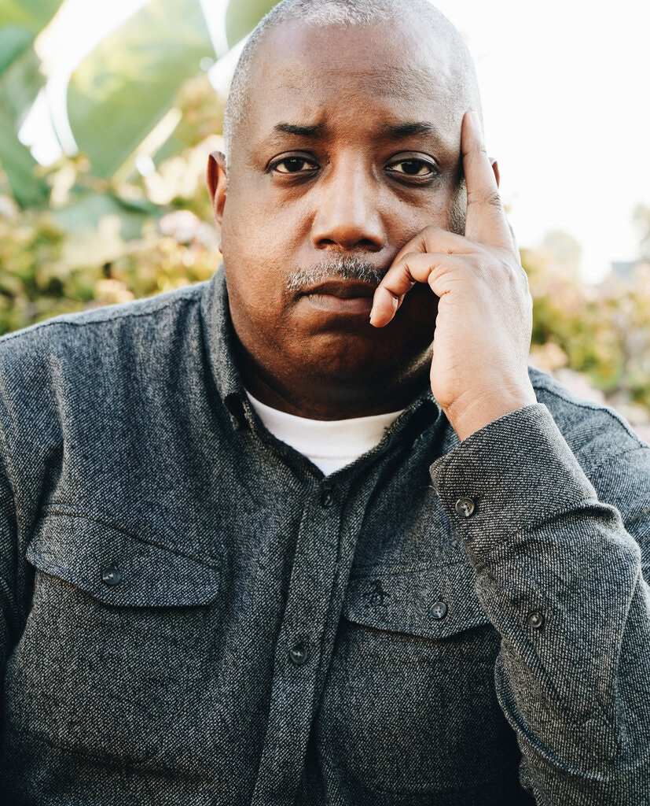
共同創意導演 Kemp Power
但，你以為想講好這個故事，只要找個黑人充數就夠了嗎？ 製片 Dana 說：「如果 Joe 設定為黑人，我們需要很多幫助。」報導中解釋，皮克斯為了忠實呈現黑人的故事與文化，與許多外部顧問交談，與黑人組織合作，並建立起公司內部的文化信任團隊（由公司的黑人員工組成，在性別、職位與年齡均是多元化的），「確保我們能夠真實地講述這個故事。」 過去曾寫過關於動畫史的文章的 Kemp Powers，了解動畫「被用來嘲弄非裔美國人的諷刺種族主義設計手法，有一段漫長且痛苦的歷史。」亦能幫助避免發生過往同樣的失誤，把刻板印象看作真實的世界，此外，「我們也不希望他們剛剛好是棕色皮膚的白人角色，我們必須賦予他們獨特的外觀。這樣他們才不會只是無聊、單調的角色。」
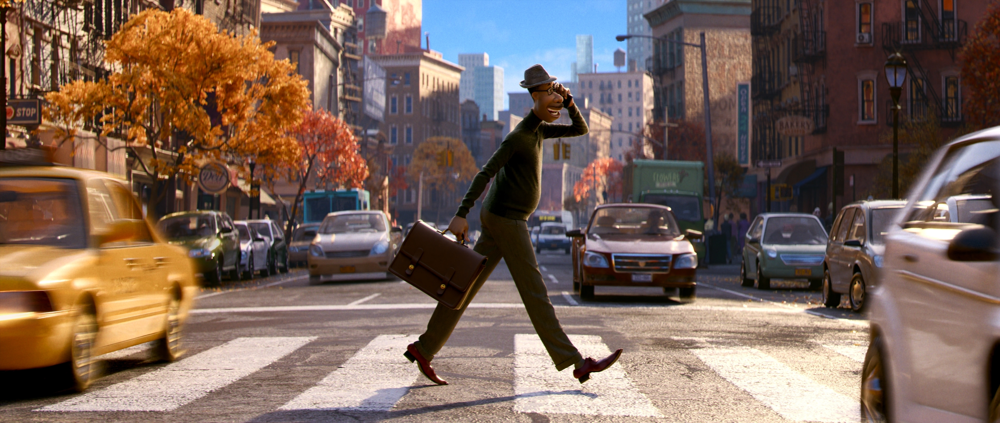
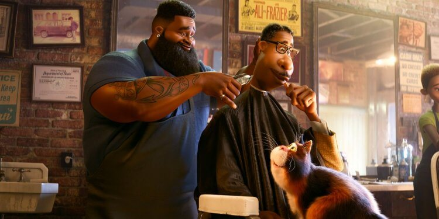
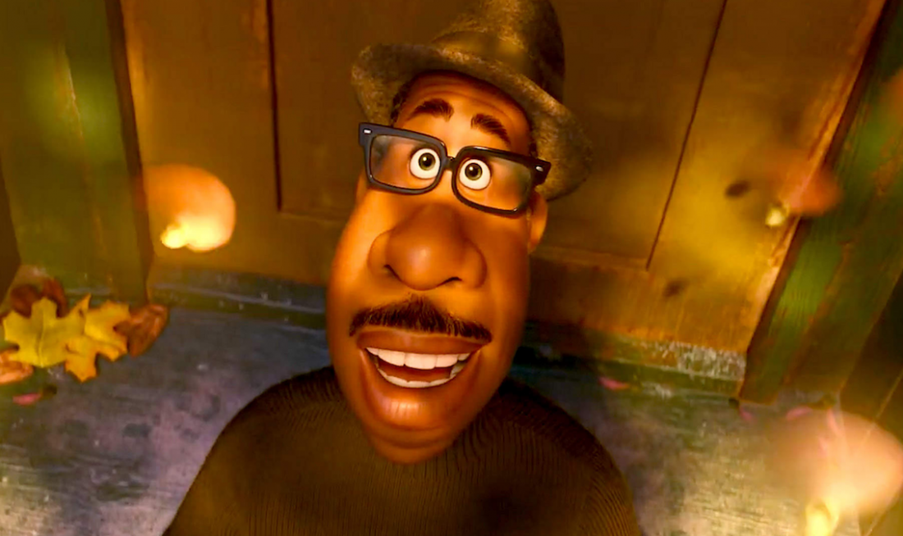
電影配樂與細緻的動畫筆觸
皮克斯的動畫電影向來相當注重動畫電影的細節，而這點在《靈魂急轉彎》中亦完整呈現。
在本片中，爵士樂佔有絕對份量。在正式進入動畫繪製前，據《紐時》報導，導演 Pete Docter 與整個動畫團隊親自到紐約的爵士俱樂部參觀，了解其中的背景故事，「我們會走上台前與那些表演者交談，問他們在哪裡學習的，為何選擇到那邊表演？過去還做過什麼工作？試圖把這些角色的世界具體化。」除素人表演者外，也諮詢過多位知名音樂家，如 Herbie Hancock、爵士鼓手 Terri Lyne Carrington 與 Questlove。
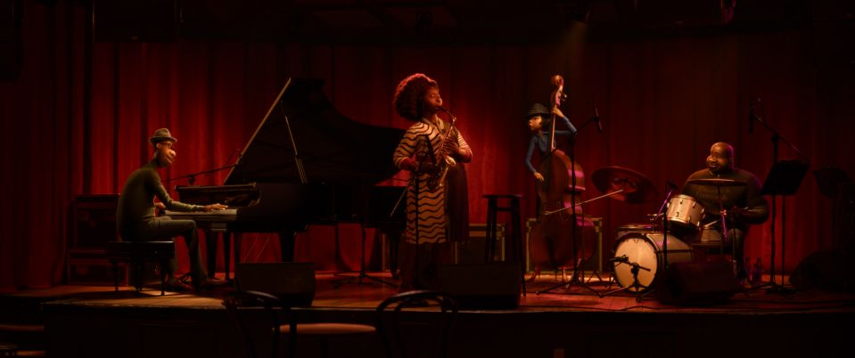報導中亦提及，為了讓動畫中的人物忠實呈現演奏動作，當 Jon 與樂團成員在紐約工作室進行錄音工作時，Pete 說：「我們在他們身邊架了約 80 台 GoPros，記錄他們演奏的過程。」然後， 他們再針對每段影片個別研究，以便獲得更準確的圖像，並瞭解如何讓這些場景忠實呈現。 Pete 補充道，動畫師為了強調視覺效果，有刻意誇張化動畫裡 Joe 演奏時的某些動作，「以彈奏姿勢與正確的音調來說，確保 Joe 演奏的真實感是至關重要的。」而在錄音過程中，他指導 Jon Baptiste 並非直接向他解釋台詞或是輸入音樂，而是直接畫出一幅畫，讓他能夠藉此理解場景的情緒。 Jon Baptiste 亦說，在創作這些場景需要的音樂時，他感覺與導演產生了種緊密的連結，說道：「Pete 像是治療師和哲學家。」並表示很開心能看見黑人音樂受到如此細心的對待。
無雷影評
√過去我們多數人往往背負著社會的期待度過一生，一路上找尋自己的人生目標與天職，跌跌撞撞，或許一切終在完成夢想的那刻歸零。事實上，意義並非渴求他人的認同，而是需要靠自己賦予的。當你下定決心前往夢想的那刻起，過程中所經歷的種種，均成就了生命的意義。 對目標的執念，亦可能阻斷你對生活的感受。 比起功名、頭銜，生活中真正值得我們在乎的事情為何？而這一切需要靠你自己去找尋答案。一如不願轉世的 22 號靈魂所拋出的疑問：「人活著終將一死，這一切真的值得嗎？」 對動蕩不安的 2020 來說，或多或少，我們都曾經歷過庸庸碌碌，找不到人生意義的時刻。《靈魂急轉彎》實為年末療癒佳作。也希望看完本片的你，能夠在今年結束之前，問自己一句：「過去的我，是否曾真正地為自己活過一次？」